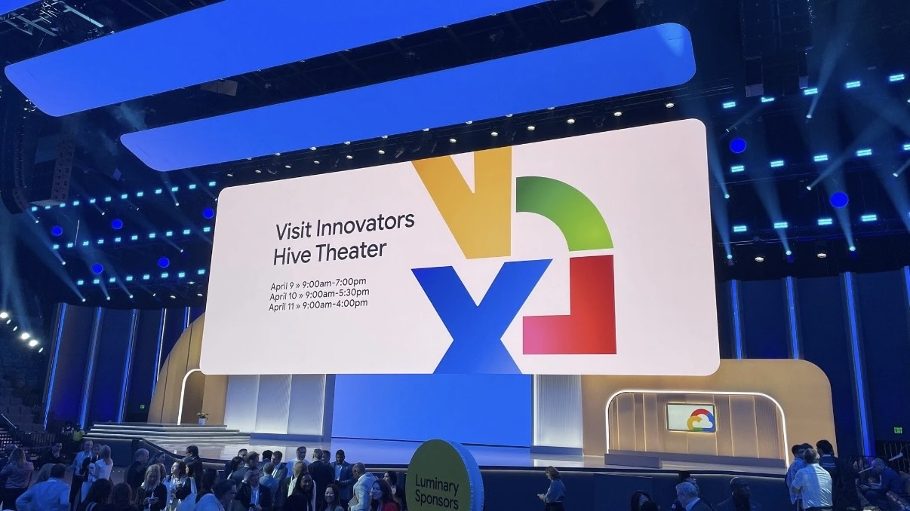

By David
A company with twenty offices does not want twenty kinds of screen. It wants an estate it can run, and that means a specification it can repeat. Standardisation is rarely about aesthetics — it is about service, spares and the cost of every future installation.
This guide explains why organisations standardise their LED displays, what to standardise and what to leave local, and how a multi-site rollout is procured.
The case is operational. A single specification across sites produces four things.
Serviceability: one set of procedures and one set of spare parts, rather than a unique answer per room. Familiarity: staff who have used one screen can use all of them. Predictable cost: the next installation is a repeat rather than a design exercise. And consistency: a screen added later matches the ones already in the estate instead of standing out.
The last point matters more than it sounds, because an inconsistently equipped estate tends to keep growing its inconsistencies.
The mistake is to standardise too much or too little. A single model number across every site fails the first room that has different geometry; standardising nothing defeats the purpose.
| Standardise | Leave local |
|---|---|
| The product family and its control system | Screen size for a specific room |
| Spare parts and service terms | Pitch, where the viewing distance justifies a finer or coarser one |
| Interfaces and signal standards | Mounting method and finish |
| Warranty and response expectations | Whether the room is video, presentation or signage |
Multi-site programmes usually move in three stages.
A pilot at one site, used to prove the specification and the service model in real conditions rather than on paper. A standard, written from what the pilot taught, covering products, interfaces, mounting and terms. Then a phased rollout, where sites are equipped in batches against the standard, so each batch benefits from the last.
Doing the pilot before writing the standard is what keeps the standard usable; a standard written first usually fails its first site and is quietly abandoned.

A rollout is normally procured through a master agreement or framework rather than a tender per site.
The commercial decision is taken once, at the centre, with one or more integrators appointed to the programme. Individual sites then buy against the pre-agreed terms, which is faster and keeps pricing consistent. Delivery and installation are left to the local integrator, who knows the building and the staff.
The consequence for a supplier is that the estate is won once, at programme level, rather than site by site — and that once a standard is set, the window for changing it is narrow.
Standardising on a single model number creates a dependency on one supplier, and organisations are rightly cautious about that.
The mitigation is to standardise on interfaces and performance rather than a part number: the signal and control standards, the mounting interface, the pitch bands, and the service terms. Written that way, the estate can move to a next generation without redesigning every site, and a second supplier can be qualified against the same standard if needed.
For a manufacturer, a standardisation programme rewards consistency over novelty.
The useful qualities are a stable product family, documented interfaces that do not change between batches, spare parts availability, and a service path the integrator can rely on at a distance from the factory.
Our factory runs 8 IC production lines and 7 LED SMT production lines under ISO 9001:2015, with CE, FCC and RoHS certification, a 15 to 20 working day lead time and a three-year warranty. We hold interface and dimension data stable across a product family so a specification written for one site can be repeated at the next. The COB CV-PRO fine-pitch series is the usual platform for corporate interiors, extended to the RH-PRO where a flagship room needs redundancy.
For the buying process, see how enterprises buy LED displays.
Send your specifications for a detailed LED display price quote with UL/ETL certification.
Request Price Quote Chat on WhatsApp